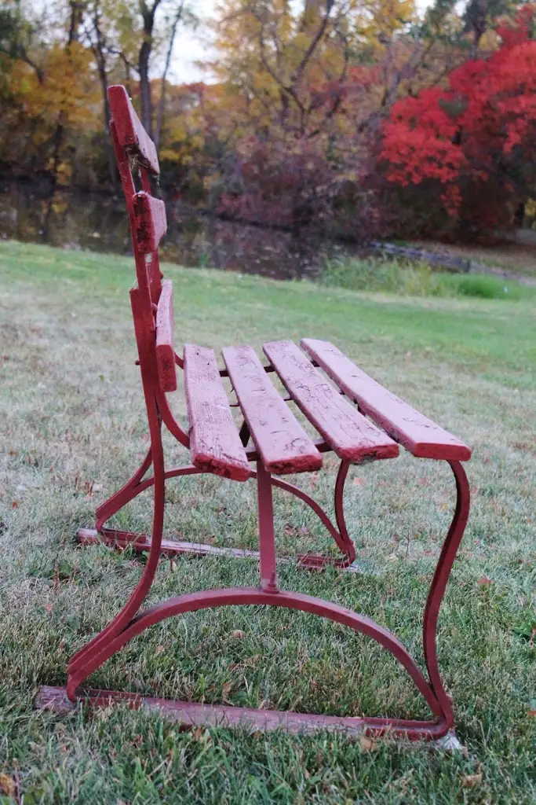
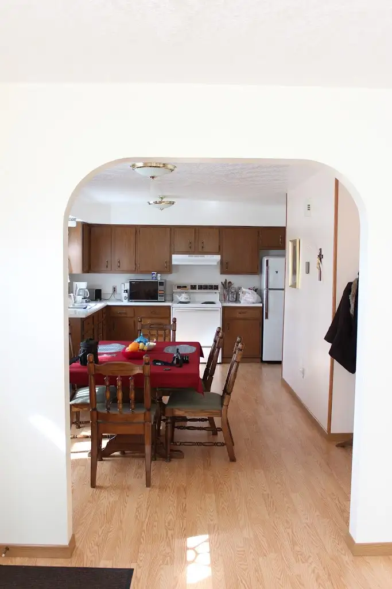

There is such a thing as a writer-soul. Never heard of it? Oh, I know without a doubt it exists.
This weekend, it became plain to me during my weekend visit to a Carmelite monastery less than an hour from my home.
{kind=link}
{kind=link}
At Carmel, the writer-soul thrives.
A writer-soul contains such characteristics as…
Gentleness…
{kind=link}
Depth…
{kind=link}
Complexity…
{kind=link}
Illumination…
{kind=link}
A Contemplative Posture….
 |
| Vicky Westra |
{kind=link}
A Circular Flow…
{kind=link}
{kind=link}
And some days, a bit of Haze …
{kind=link}
At times it is closed, hidden, but you’ll find, if you look carefully enough, it reflects the beauty of the world from the inside-out….
{kind=link}
Though I’d been planning to go solo my weekend at the cloister, once the thought of bringing Vicky along took hold, it was hard to shake. I knew she’d make the perfect roommate for such a weekend in such a place.
During the hours I cocooned myself in guest bedroom #1 to work on my project, Vicky padded about in another space, respecting my need for quiet.
 |
| Vicky Westra |
{kind=link}
When the meal-bell rang, indicating lunch or dinner had been prepared, we walked to the dining room together, talking about what we’d been observing — all of our wondering about the Sisters’ lives, and how different they must be from our own; how their very consciousness, which is fed by a life of prayer, must be on another plane entirely.
We talked, too, of gratitude, and our awe over the scenery and just how blessed we were to be there then, of all times, to let our writer-souls rest and do what they may.
In between the quiet spaces and pondering, eating and wondering, we kept being drawn, time and again, to the pasture behind the guest house.
Vicky noticed him first.
He was stately, majestic, but he had a kind soul. A writer-soul sort of spirit. Or at least the kind a writer can mightily appreciate.
{kind=link}
When the caretaker suggested we feed him some apples, we thought, what a grand idea. Surely, he’ll want to be our best friend. In the end, turns out the grass was more appealing.
But he did wander over at one point. We worried, as mothers do, over the burrs that had collected in the top part of his mane.
{kind=link}
Later, he brought his friends along. We found them irresistible!
{kind=link}
They were not like the goats I met this summer in Kansas at a public farm; goats accustomed to feeding off the crackers given daily by throngs of visitors.
{kind=link}
They did not charge at the fence to see us, waiting for their treat. Rather, they studied us, curiously, interested but still as observers…cautious.
Like writers.
At one point, two of them started bucking each other, like little kids do. Or perhaps like writers do after they’ve finished poring over the composition of another chapter and realize it’s time to go out and play.
Even the horse showed his playful, silly side, striking a caricature sort of pose seemingly for no reason at all. Or maybe it should be said, as Vicky did when she reviewed this visual: “Even the horses chant at Carmel!”
{kind=link}
For Vicky and me, playtime meant wandering the grounds with our cameras, delighting in the canopy that had been provided.
{kind=link}
Two writer-souls in the same place at the same time. We talked plenty, but there were long pauses, too; still moments begging no interpretation. We counted them as rich.
{kind=link}
Indeed, the writer-soul exists. It can’t be seen, but it’s more real than an angel’s wing, and it resides within you and me.
{kind=link}
And if it can be linked to a sound, surely, on the best days, the writer-soul sounds something akin to the Sisters’ prayers at compline (evening prayer).
Q4U: What characteristics does your writer-soul contain?